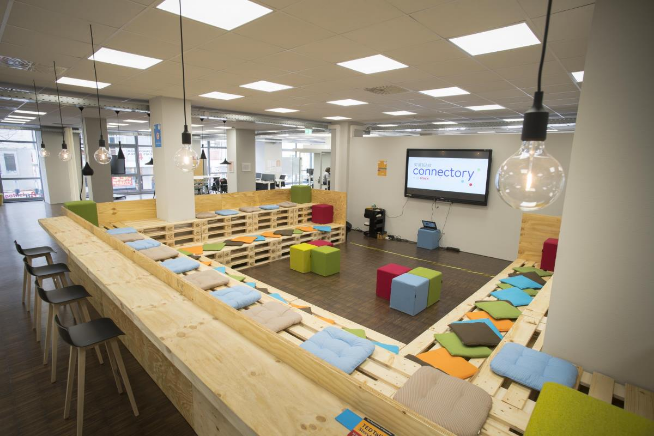

CarbyneStackCon '22¶
CarbyneStackCon '22 is over. Stay tuned for CarbyneStackCon '23!

The Carbyne Stack Conference (or CarbyneStackCon) is the annual meetup of the Carbyne Stack Open Source Community. It is designed to foster collaboration, discussion and knowledge sharing within the Carbyne Stack community.
Retrospective¶

CarbyneStackCon '22 was a blast. We had an engaged audience of 20 MPC enthusiasts on site and another 40 who dialed in from all over the world. In addition to awesome talks on use cases and business ideas around MPC and Carbyne Stack (we'll be making recordings available in the coming weeks), we used the opportunity to work on a shared vision and roadmap for Carbyne Stack. It was a pleasure to have you all as our guests. We look forward to seeing you all next year at CarbyneStackCon '23!
Registration¶
In-person registration closed
In-person registration is closed since 6 pm, October 24, 2022 (CEST). Registration for virtual attendance is still possible.
CarbyneStackCon '22 (CSC22) is an open event sponsored by Bosch Research. Everyone interested is welcome to attend! However, seats for in-person participation are limited and registration is required in order to facilitate our planning.
Program¶
We have put together an exciting and fun program for CarbyneStackCon '22. It's an attractive mix of talks from industry and academia, interactive sessions, and a fair amount of time for networking, discussions, and having fun. Note that all times are Central European Summer Time (CEST).
8:00 am
Registration
9:00 am
Opening
9:15 am Industry Talk
Secure multi-party computation. When? Which kind? For whom?
Dr. Dan Bogdanov (Chief Science Officer at Cybernetica, Board Member at the MPC Alliance)
Dan is the inventor of Sharemind, a secure multi-party computation system for collecting, sharing and processing private data. Sharemind has seen use by governments and companies who want to show their users that they cannot abuse the data they are entrusted with.
Abstract
We’ve come a long way from securely comparing the wealth of two millionaires. We can use MPC to predict satellite collisions, evaluate neural networks, perform cryptographic operations. But I don’t even have an app on my phone to find if the salary range I’m offering overlaps with the expectations of a potential employee. Is the technology here too early? Are researchers working on the wrong problems? Who is MPC really for? This talk is both about barriers and opportunities.
9:45 am Industry Talk
One year of Carbyne Stack - Retrospective and Outlook
Dr. Sven Trieflinger (Senior Research Project Manager for Privacy-Preserving Computing Technologies at Bosch Research)
Sven is a Senior Project Manager, Research Engineer, and open source software maintainer at Bosch Research. He has over 15 years of experience in the design, architecture, and implementation of distributed systems and cloud platforms. With his team at Bosch, Sven drives innovation in the area of privacy-preserving computing technologies and is spearheading open source computing on encrypted data technology with the Carbyne Stack cloud-native Secure Multiparty Computation platform.
Abstract
On September 21, 2021, just a little over a year ago, Bosch Research open sourced an internally developed prototype of a cloud platform for Secure Multiparty Computation (MPC) that bridges the gap towards using MPC in an enterprise context by combining state-of-the-art MPC protocols and cloud-native technology. It is time to reflect on what we have achieved so far in terms of further developing the Carbyne Stack platform and building an open source community around it. Knowing the status quo will allow us to shed light on the necessary next steps towards a Carbyne Stack ‘Minimum Viable Platform’ for enterprise use from the Bosch research point of view.
10:15 am
Coffee break and group photo
10:45 am Industry Talk
Privacy-preserving Cross-company Data Collaborations
Dr. Jonas Böhler (Senior Researcher at SAP Security Research)
Jonas is a senior researcher at SAP security research. He received his PhD from the Karlsruhe Institute of Technology. His research interests are privacy-enhancing technologies such as secure multi-party computation and data anonymization with applications for cross-company collaborations.
Abstract
Data-driven insights are critical for modern businesses to inform decision making and optimize processes. In cross-company collaborations necessary data is distributed among companies. Here, data sharing can face trust concerns or privacy issues. But can the data be analyzed without being revealed to anyone? In this talk, we discuss privacy-preserving data collaborations across companies where Carbyne Stack keeps data private and only share insights.
11:15 am Industry Talk
Multi-cloud multi-party computation for multiple data providers
Dr.-Ing. Kalman Graffi (Principal Scientist at Honda Research Institute Europe)
Kalman is Principal Scientist at Honda Research Institute Europe. His work focuses specifically on scalable privacy-preserving computation approaches and concepts for vulnerability modeling and detection. Previously, he was a professor (W1) at the University of Düsseldorf.
Abstract
The automotive industry can benefit greatly from the data created on the roads, while at the same time the privacy of the customers is a high aim in this. In this talk, we discuss options to support the use case of privacy-preserving computation in the presence of a scaling number of data providers, analysts, and potential algorithm providers and elaborate on a scalable multi-cloud architecture for the on-demand execution of MPC queries.
11:45 am
Community Awards
12:00 am
Lunch break
1:00 pm Hands-on Session
The Road ahead - Expectations and desired Features for Carbyne Stack
Moderated by Sebastian Becker (Research Engineer, Bosch Research)
Sebastian is a Research Engineer at Bosch Research. His academic background is in health information management and medical engineering. He has a deep-seated interest in the protection of (personal) data during IT-based processing. Sebastian is a maintainer of Carbyne Stack focusing on storage services.
2:30 pm
Coffee break
3:00 pm Research Talk
Cost-effective MPC from an offline phase with low communication
Vincent Rieder (PhD Candidate at Bosch Research)
Vincent Rieder is a Phd student at Bosch, working on the topic of "Efficient and Secure Cloud Native Privacy Preserving Technologies", with a main focus on multi party computation. He studied mathematics at the University of Stuttgart, with minor subject computer science.
Abstract
Carbyne Stack is based on the SPDZ MPC protocol, its online phase is deployed form the MP-SPDZ library. The necessary cryptographic material, i.e., authenticated Beaver Triples, have to be generated within an offline phase. However, readily available offline phase implementations are prohibitively expensive in terms of computational complexity and bandwidth consumption. Efficient offline phases with low communication can be based on the ring-LPN assumption. Such approaches require to generate sparse shared polynomials, which can be initialized by distributed point functions. This talk is an introduction to the necessary theory and will present the current state of our implementation and the expected cost savings.
3:30 pm Research Talk
Secrecy: Secure collaborative analytics in untrusted clouds
Dr. John Liagouris (Assistant Professor at Boston University)
John is an assistant professor of Computer Science at Boston University. His research interests lie in distributed systems and databases. Before joining BU, he was a visiting scholar at the RISELab, UC Berkeley, a senior researcher at the Systems Group, ETH Zurich, a visiting research fellow at the University of Hong Kong (HKU), and a research assistant at the “Athena” Research Center, Greece. John obtained his PhD from NTUA, Greece.
Abstract
In this talk I will present Secrecy, a novel MPC framework for secure relational analytics that we have been developing at Boston University. Secrecy can dramatically improve the performance of complex relational queries while retaining the full security guarantees of the cryptographic protocols. Compared to prior work, Secrecy takes a fundamentally different approach by opening the MPC black boxes to the database optimizer. Secrecy uses an analytical cost model that formulates query costs in terms of secure MPC operations and a query engine for vectorized MPC execution that employs a rich set of logical, physical, and protocol-aware optimizations. These optimizations enable Secrecy to outperform state-of-the-art frameworks and scale to much larger datasets than those reported in prior work. I will describe our ongoing work on integrating Secrecy with the Carbyne stack and conclude with a broader vision on a new generation of systems for privacy-preserving analytics in untrusted clouds.
4:00 pm Research Talk
Generalized Tuples for MP-SPDZ
Dr. Pascal Reisert (Postdoctoral Researcher at Institute of Information Security, University of Stuttgart)
Pascal studied Mathematics and Physics at the Ludwig-Maximilians University and Technical University Munich. He received his PhD in Algebraic Geometry in 2016. After postdoctoral positions in Mathematics and Physics he joined the Institute of Information Security Stuttgart under Prof. Ralf Küsters in 2019. His research and lectures concentrate on post-quantum secure cryptosystems and their application in Multi-Party Computation.
Abstract
Some of the most efficient protocols for Multi-Party Computation (MPC) follow a two-phase approach where correlated randomness, in particular Beaver triples, is generated in the offline phase and then used to speed up the online phase. Recently, more complex correlations have been introduced to optimize certain operations even further, e.g. matrix tuples for matrix multiplication, convolution tuples for tensor convolutions and polynomial tuples to evaluate multivariate polynomials. In this talk, we briefly discuss these different forms of generalized tuples, their advantages and trade-offs. Furthermore, we present benchmarks of our corresponding MP-SPDZ-extensions and compare them to state-of-the-art protocols like Overdrive. We show that the use of generalized tuples can significantly improve the performance of MP-SPDZ and of Carbyne Stack.
4:30 pm Research Talk
Decentralized Cosmos-based MPC-as-a-Service powered by Carbyne Stack
Jared Weinfurtner (Full-Stack Software Engineer for Privacy-Preserving Computing Technologies, Robert Bosch GmbH)
Jared is a Full-Stack Software Engineer with over 15 years of experience, focusing on rapid prototyping and the developer experience. Prior to joining Carbyne Stack, Jared was a researcher on Bosch's Economy of Things project in the area of decentralized energy trading incorporating self-sovereign identities and combining privacy-preserving computing technologies for day-ahead trading.
Abstract
To be able to run MPC-as-a-Service, we need a platform that performs matchmaking for those wanting to form a compute party, those wanting to secret share their data, and those wanting to perform computations. But who would operate such a platform? This talk will explore how we can utilize web3 technologies to operate this platform in a decentralized way utilizing the latest generation of delegated proof-of-stake blockchains, self-sovereign identities, verifiable credentials, and Carbyne Stack.
5:00 pm
Coffee break
5:30 pm Hands-on Session
Carbyne Stack Open Source Community Vision
Moderated by Sebastian Becker (Research Engineer, Bosch Research)
Sebastian is a Research Engineer at Bosch Research. His academic background is in health information management and medical engineering. He has a deep-seated interest in the protection of (personal) data during IT-based processing. Sebastian is a maintainer of Carbyne Stack focusing on storage services.
6:00 pm
Closing and feedback session
from 6:30 pm
Dinner (see below)
Venue Information¶
-
Stuttgart Connectory - Internet of Things (IoT) co-creation space in the heart of Stuttgart.

Address
Königstraße 78, 1st Floor
70173 Stuttgart
Getting There¶
The Connectory is located in the heart of Stuttgart's city center (see Google Maps). The easiest way to get there is by public transport: train station Stadtmitte and subway station Rotebühlplatz are right around the corner.
Dinner¶
Dinner is complimentary and served just 200 meters from the Connectory at
Sophie's Brauhaus
Marienstraße 29
70178 Stuttgart
(see Google Maps)